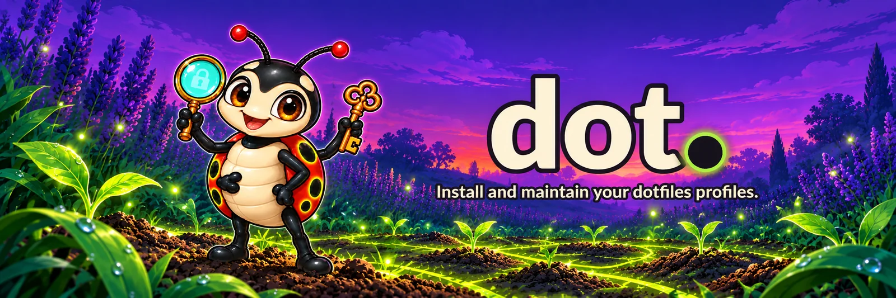

Documentation

dot.
One tool for all your dotfiles, without leaking a thing.
ci Linux: supported macOS: supported Go: static binary License: Unlicense
Why dot? · Quick start · A profile · Commands · Development
dot installs and maintains one or more dotfiles profiles, from a single static binary for Linux
and macOS. A profile is a data repository with a dot.json manifest, cloned into
~/.dot/<key>. dot brings the rest: the links in ~, a guard against leaks (forbidden terms,
secrets), secrets read from your vault (bw and pass-cli), and the merge of MCP servers and
settings for Claude Code, Codex and OpenCode.
Several profiles can live side by side on one machine, a personal one and a work one for
instance, each with its own git identity, and dot treats them all the same way.
Why dot?
Dotfiles are the configuration files that live in your home directory: ~/.zshrc,
~/.gitconfig, ~/.config/…, ~/.claude/settings.json. They make a machine yours, so people
keep them in a git repository to rebuild a machine, or to share one setup between several.
A plain repository is a good start, and for one machine, one identity and nothing secret near your
config, it is all you need. The questions come later, and each one is usually answered with a
script of your own. dot is that layer, written once and tested:
Put the files in place, without breaking anything
A profile keeps its files under home/ (linked into ~) and bin/ (linked into
~/.local/bin):
dotfiles/ ~ after `dot install`
├── dot.json
├── home/
│ ├── .zshrc → ~/.zshrc (a symbolic link to the file in ~/.dot/dotfiles)
│ └── .gitconfig → ~/.gitconfig
└── bin/
└── backup → ~/.local/bin/backup
Editing ~/.zshrc edits the file in the repository, so dot push has something to commit. A file
that was already there is moved to ~/.local/state/dotfiles/backup/<date>/ (kept 30 days),
running dot install twice changes nothing, and dot install -n prints the steps it would run
instead of running them.
dot backups list shows those backups and dot backups restore [<run>] [<path>...] moves files
back. A file is restored only when its place in ~ is empty or holds a link managed by dot: a real
file is never overwritten.
dot adopt ~/.foo goes the other way: it moves an existing file of ~ into the profile's home/
and replaces it with a link. Before anything moves, the file name and content go through the
forbidden terms and the secret scanner; a hit, a missing term list or an unavailable scanner
refuses the file, and only its name is reported. Symlinks, files outside ~ and paths already
provided by another profile are refused too. Nothing is committed: dot push does that.
One setup per OS or per machine
Besides home/, a profile may carry home@linux/, home@darwin/ and home@<host>/, where
<host> is the machine's short hostname in lower case. For a given path of ~, home@<host>
wins over home@<os>, which wins over home/; variants for another system or machine are
ignored. There is no templating: files in ~ stay links into the clone.
-
dot install -nshows the winning layer when it is nothome. -
dot adopt --osor--hostmoves a file into the matching variant. - A
deploy.sparselist must name each variant it wants (home@darwin...). -
dot settings,dot mcpand the mise configuration still readhome/only.
Keep a personal and a work setup on the same machine
dot install https://github.com/you/dotfiles-perso.git
dot install https://github.com/you/dotfiles-work.git -p work
dot profile work ~/src/github.com/acme/ # repositories under this folder use the `work` git identity
dot whoami # run in a repository: the identity in force and the file that sets it
dot repos --problems # repositories whose email differs from their profile, or a bypassed guarddot profile writes an includeIf rule into ~/.config/git/profiles.local (never versioned). The
identity it points to is the work.gitconfig that your manifest declares under profiles, and
your profile ships the ~/.config/git/profiles.gitconfig that dot install adds to your global
git config, with an include of profiles.local. From then on git commit in ~/src/github.com/acme/app
uses the work name and email, and a repository elsewhere keeps your default one. dot repos --problems
lists the repositories whose email differs from the one of their profile and exits with 1.
Both profiles are updated together with dot pull. If they both try to link the same file
(say ~/.zshrc), dot install refuses before it writes anything, naming both sources, instead
of silently letting one win.
Do not leak your employer, or a token, into a personal repository
Dotfiles and personal repositories are often public, and they are easy to pollute: a token pasted
in a snippet, an internal hostname in a comment, a commit made with your work email. Git hooks
that are one line each (exec dot guard staged in pre-commit, exec dot guard msg "$1" in
commit-msg, exec dot guard push "$@" in pre-push) run dot guard on every commit and push.
It reads a list of terms that lives in the profile folder and is never committed:
# ~/.dot/<key>/forbidden.local (one case-insensitive regular expression per line)
acme
internal\.example\.com
Then, in a repository that uses that profile:
git commit -m "add wiki link" # refused: a staged file mentions internal.example.com (its name is reported)
git commit -m "work for acme" # refused: the commit message matches a term
git commit -m "add token" # refused: the secret scanner (betterleaks) found a token
git commit -m "harmless note" # acceptedThe guard reports file names, branches and commits, never the text it found, and it fails closed:
a missing list or an unavailable scanner blocks instead of letting everything through (dot push
is refused until forbidden.local exists). Images and fonts (png, jpg, gif, webp, woff2…) are not read for terms, since their bytes are
not text (their names are checked, and the secret scan still reads them); any other binary file is. A
commit made with a work author identity in a personal repository is refused too. A work repository that names the employer on purpose opts
out of the terms and keeps the secret scan: git config dotfiles.guard secrets. Finally,
dot terms copies the list to the FORBIDDEN_TERMS secret of the origin repository (with gh),
so the same check runs in CI.
Keep secrets out of your config
Instead of export GITHUB_TOKEN=… in .zshrc, you keep a reference to your vault
(Bitwarden or Proton Pass), and the value is read only when a command needs it:
dot secrets add GITHUB_TOKEN bw:github-token # or pass:<vault>/<item>
dot secrets run GITHUB_TOKEN -- gh api user # the token exists for this one command onlyThe names live in a local file, secrets.local (mode 600), in the profile folder. A value is
never passed as a process argument and never sits in your shell.
Configure your coding agents once
Claude Code, Codex and OpenCode each want their own MCP servers and settings. dot keeps one
shared list and applies it to all three:
dot mcp -n # preview the plan
dot mcp # the servers of your profiles → Claude Code, Codex and OpenCode
dot settings -n # preview the diff of ~/.claude/settings.json
dot settings # merge home/.claude/settings.base.json into itFor settings, the versioned base wins and the extra local keys are kept, and the old file is
backed up. For MCP, a local servers.local.json can replace a server by name or remove it, and
the secrets of a server stay names that dot secrets run resolves when the server starts. With
one profile the list is ~/.config/mcp/servers.json, a link to the profile's file; with several,
dot reads the list of each profile in registry order.
Notice when something drifts, and rebuild a machine
dot status # clones: changes, ahead / behind; and files that are no longer links
dot doctor # read-only report of every profileSome applications rewrite a config file instead of editing it through the link. That file is then
"detached": its changes would never reach the repository. dot status lists it; once you have
carried its content back into the profile, dot install puts the link back and keeps the
detached file in the backup folder.
On a new machine, dot install <url> brings the profiles back, and dot repos export /
dot repos clone bring back the repositories you work on, under ~/src/<host>/<owner>/<repo>.
Highlights
-
Several profiles, one tool. Each profile lives in its own clone (
~/.dot/<key>) and is listed in a registry (~/.dot/profiles.json).pull,push,statusanddoctoract on all of them at once, or on a single one with-p. -
Links, not copies.
dot installlinks the profile's files into~, anddot uninstalltakes them out again.-nshows what would change without writing anything. -
A guard against leaks.
dot guardchecks the staged files, the commit message and the push for forbidden terms and secrets, from git hooks that are one line each. The secret scanner (betterleaks) is pinned to one version and its sha256 is compiled into the binary. -
Adopt and restore.
dot adoptmoves a file of~into the profile, guard first, anddot backups restorebrings back what an install replaced. -
Per-OS and per-host variants.
home@linux/,home@darwin/andhome@<host>/overridehome/path by path. -
Signed releases. Binaries come with a
SHA256SUMSfile signed with Ed25519, anddot self-updateverifies the signature, then the checksum, before replacing the executable. -
Secrets stay in your vault.
dot secretsworks withbwandpass-cli(add,get,run,unlock,lock,status), so a profile never has to hold them. -
One config for your coding agents.
dot settingsanddot mcpmerge the settings and the MCP servers of a profile into Claude Code, Codex and OpenCode. -
Strict manifests.
dot.jsonis validated and an unknown key is refused, so a typo is an error and not a silent no-op. -
Extensible.
dot <cmd>runsdot-<cmd>, found in the profile'sbin/and then on yourPATH, and falls back togiton the clone. -
A health check.
dot doctorreports the state of every profile without changing anything.
Quick start
Install dot, a static binary for Linux or macOS, into ~/.local/bin/dot. The script checks the
download against the checksum it carries (a pinned release, a bootstrap that is not bumped at every
release), then runs dot self-update, which checks the signature and the checksum of the latest
release before replacing it; if that update fails, the pinned binary stays. It installs the profile
when you give it a URL:
curl -fsSL https://raw.githubusercontent.com/fmatsos/dot/main/install.sh | sh -s -- https://github.com/you/dotfiles.gitWithout the URL it only installs dot. Add ~/.local/bin to your PATH if it is not there yet,
then:
dot install https://github.com/you/dotfiles.git -n # dry run: prints the steps without running them
dot install https://github.com/you/dotfiles.git # clone, register and link the profile
printf 'my-employer\n' > ~/.dot/dotfiles/forbidden.local # the guard's terms; `dot push` is refused without it
dot doctor # read-only reportTo build it yourself instead, you only need Go: git clone the repository,
then make build produces the static binary ./dot.
Then keep it up to date:
dot pull # git pull --rebase on every profile, then install
dot push "tidy" # commit the tracked files that changed, then push
dot status # changes in the clones and detached filesEach release holds the four binaries (dot-linux-x64, dot-linux-arm64, dot-macos-x64,
dot-macos-arm64), a SHA256SUMS file and its Ed25519 signature SHA256SUMS.sig. The
release.yml workflow builds, signs and publishes them when a vX.Y.Z tag is pushed, and releases
are immutable. dot self-update checks the signature with the public key compiled into the binary,
then the checksum, before replacing the executable.
A profile
A profile is a repository with a dot.json at its root. The manifest says which folders to
deploy, which git identities the profile has, and which optional modules to enable:
{
"repo": "https://github.com/you/dotfiles.git",
"deploy": { "sparse": ["home", "bin", ".githooks"] },
"profiles": { "perso": "home/.config/git/profiles/perso.gitconfig" },
"deployProfile": "perso",
"marketplace": { "name": "acme", "plugins": ["acme"] },
"nvm": { "node": "22.11.0", "packages": ["@scope/tool@1.2.3"] },
"modules": ["settings", "mcp"]
}| Key | Meaning |
|---|---|
repo |
URL of the profile's repository. |
deploy.sparse |
The top-level folders to check out and link. |
profiles |
Named git identities, each one a .gitconfig under home/. |
deployProfile |
The identity to deploy on this machine. It must be one of profiles. |
marketplace |
Optional: a plugin marketplace and its plugins. |
nvm |
Optional: a pinned Node version (x.y.z) and the packages to install with it. |
modules |
Optional: settings and/or mcp, to merge agent settings and MCP servers. |
The git hooks of the data repository stay one line each:
exec dot guard staged # pre-commit
exec dot guard msg "$1" # commit-msg
exec dot guard push "$@" # pre-pushCommands
dot install <url> [-p <key>] [-n] clone a profile into ~/.dot/<key>, register it, install it
dot install [-n] reinstall every registered profile
dot pull update the profiles (git pull --rebase, then install)
dot push [message] commit the tracked files that changed in the profiles, then push
dot status changes in the clones and detached files (alias st)
dot uninstall -p <key> [--purge] remove the links and the registry entry
dot adopt [-p <key>] [-n] [--os|--host] <file>...
move a file of ~ into the profile, guard checks first
dot backups list|restore [-n] files of ~ backed up by install, and their restoration
dot self-update [--version vX.Y.Z] [-n] update dot from a signed release
dot doctor read-only report
dot config list|get|set|unset read and edit the ~/.dot/profiles.json registry
dot whoami | profile | terms | clone | repos
dot secrets add|get|run|unlock|lock|status
dot guard staged|msg|push|all leak guard for git hooks (forbidden terms, secrets)
dot settings [-n] | dot mcp [-n] merge Claude settings and MCP servers
dot <cmd> run dot-<cmd> (profile bin/, then PATH), otherwise git on the clone
Choosing a profile
The target profile is chosen with -p/--profile <key>, then DOT_PROFILE, then the registry's
default profile. Without -p, pull, push, status, doctor, settings and mcp act on
every registered profile, and the other commands on the default profile. With several profiles
registered, dot <cmd> searches every profile's bin/: a dot-<cmd> claimed by two profiles is
refused and you must pass -p. Without -p, the key
of a dot install <url> is the repository name in the URL.
| Variable | Effect |
|---|---|
DOT_PROFILE |
The profile to target when -p is not given. |
DOTFILES_DEPLOY |
The folder of a profile, used directly (a transition aid and the entry point of the tests). |
DOT_BETTERLEAKS |
Path of a scanner binary that replaces the pinned betterleaks, for tests only. |
Exit codes
| Code | Meaning |
|---|---|
0 |
Success. |
1 |
The command failed. |
2 |
Wrong arguments or flags. |
3 |
The secrets vault is locked or logged out (dot secrets). |
dot secrets run exits with the code of the command it wraps.
Development
Go, with cobra for the command line. make test runs
go vet and go test -race; make build produces the static binary ./dot.
A command lives in its own file cmd/dot/cmd_<name>.go and registers itself with
func init() { register(newXxxCmd) }: no shared file is modified. The black-box tests are bash
scripts tests/<name>.sh that source tests/lib.sh and call dot (the binary in $DOT_BIN,
built if needed). They must run with GNU and BSD tools alike: tests/lib.sh provides portable
helpers (stat_inode_mtime, in_pty).
| Workflow | Runs on | What it does |
|---|---|---|
ci.yml |
push, pull request | The guard (forbidden terms in files and commit metadata, secret scan), then go vet, go test -race, the static build and the black-box tests in tests/*.sh, on Linux and macOS. |
release.yml |
tag vX.Y.Z
|
Builds the four static binaries, computes and signs SHA256SUMS, checks the signature against the committed public key and publishes the release. |
dependabot.yml |
weekly | Updates the actions and the Go modules. |
License
Public domain, see LICENSE (Unlicense). Contributions are dedicated to the public domain too, see CONTRIBUTING.